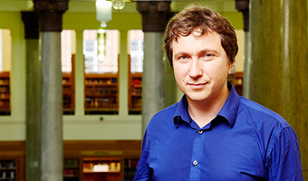

Dr Bogdan Babych
Associate Professor in Translation Studies
Member of the Natural Language Processing Group
Qualifications
PhD in Machine Translation, University of Leeds
'Candidate of Sciences' in Ukrainian Linguistics, Ukrainian Academy of Sciences
Research interests
- Computational linguistics for defence and security applications
- Automatic extraction of translation equivalents
- Information Extraction and Machine Translation
- MT Evaluation
- Hybrid Machine Translation
- Linguistic models for MT
- Computational models of morphosyntax
- Translation equivalents in comparable corpora
- MT for under-resourced languages
- Ukrainian Linguistics
- Slavonic Linguistics

Overview
Bogdan Babych is Associate Professor in Translation Studies within the School of Modern Languages and Cultures.
He works in the area of Computational Linguistics and Natural Language Processing and has published papers on evaluating and improving the quality of Machine Translation (MT) with Information Extraction techniques, extracting translation equivalents from large non-parallel corpora, developing MT for under-resourced languages, hybrid MT, on computational models for Ukrainian and Russian morphosyntax, machine translation to and from Slavonic languages, using Machine Translation for supporting language learning and authoring in non-native language. He previously worked as a computational linguist at L&H Speech Products, Belgium. He holds a PhD in Machine Translation from the University of Leeds, and a degree in Ukrainian Linguistics from Ukrainian National Academy of Sciences. He now coordinates an FP7 Marie Curie project HyghTra on developing a new hybrid MT architecture. He previously worked in other FP7 projects -- ACCURAT (enhancing MT using comparable corpora for under-resourced languages) and TTC (mining translation terminology from comparable corpora). In 2007-2009 he worked on his project Translation Strategies in Comparable Corpora supported by the Leverhulme Early Career Research Fellowship.
Research projects
(For details see Projects webpage)
EU FP7 Marie Curie IAPP project HyghTra (2010-2014)
Project: Hybrid high-quality translation system
Role: Coordinator
EU FP7 ICT Project ACCURAT (2010-2012)
Project: Analysis and evaluation of Comparable Corpora for Under Resourced Areas of machine Translation
Role: Principal Investigator for Leeds team
Leverhulme Early Career Research Fellowship (2007-2009)
Project: Translation Strategies in Comparable Corpora
Role: Principal Investigator
CTS CorpusLabs project: interactive labs for corpus research
Web service tools for supporting industrial collaboration, impact and students' research projects:
http://corpus.leeds.ac.uk/corpuslabs/
Post-graduate research liaison for the Centre of Translation Studies, University of Leeds
If you are interested in applying for a PhD or MA by research at the Centre for Translation Studies, University of Leeds, please check my PhD/MRes information page:
http://corpus.leeds.ac.uk/bogdan/teaching/pgr/
Research Student Supervision
Bogdan is interested in supervising PhD and MA by research students in a range of areas and topics, which include:
Machine Translation and Computer-Assisted Translation
Evaluation of Machine TranslationLinguistic models for Machine Translation
MT in the workflow of professional translators and translation companies
Improving MT quality with Computational Linguistics (CL) technologies
Emerging CL technologies for Computer-Assisted Translation and Interpreting
Collaborative translation workflow
Computational and Corpus Linguistics
Multiword expressions and phraseologyComputational models of discourse
Computational aspects of Slavonic languages
Computational models of morphosyntax
Corpus linguistics
Computational complexity of langauge
Tree Adjoining Grammars and other mildly context-sensitive formalisms
Corpus-based translation studies
Computational Linguistics methods for research in humanities
Slavonic Languages and General Linguistics
Ukrainian linguisticsMorphosyntax of Slavonic Languages
Phraseology
Linguistic constructions and their formal models
Please send an email, or your proposal with CV to b.babych@leeds.ac.uk
(Programming skills and/or knowledge of statistical packages are an advantage)
Citations, indices and videolectures
Google Scholar citations
ACM citations
Citeseer citations
MT Archive publications (with PDFs)
Dblp index
Humbox profile
Video of a talk at ACL 2007, Prague: Assisting Translators in indirect lexical transfer
Sections of this website
Publications and CV
Projects
Research results
Industrial collaboration
Teaching
Ukrainian studies and Ukrainian linguistics
Blog
Links and personal information
Contact
Web profile at the School of Modern Languages
http://www.leeds.ac.uk/arts/profile/125028/824/bogdan_babych